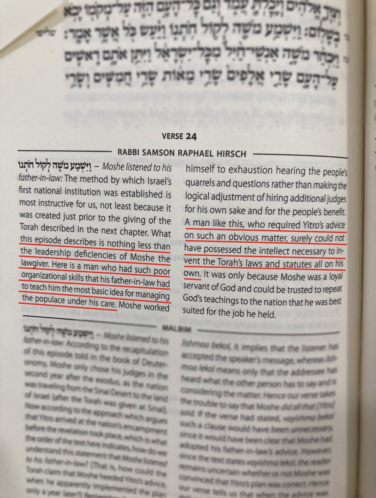
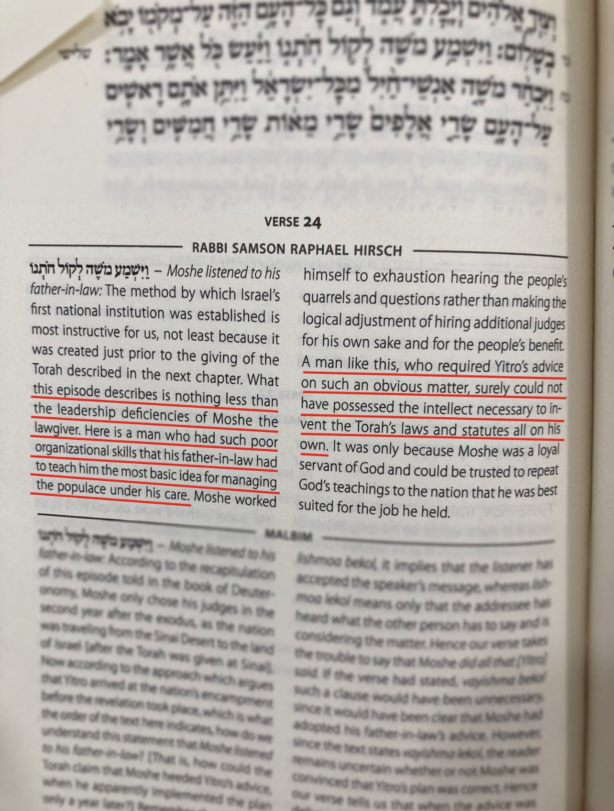

Injustice towards prophets in Judaism
The Rambam lays out criteria for a prophet 👇
“Prophecy is bestowed only upon a very wise sage of a strong character, who is never overcome by his natural inclinations in any regard. Instead, with his mind, he overcomes his natural inclinations at all times. He must [also] possess a broad and correct perspective. A person who is full of all these qualities and is physically sound [is fit for prophecy].”
Source: "Guide for the Perplexed", Vol. ii, Chapters 36-46.
If this is the case then a lot of prophets in the Tanakh have failed this criteria. Let’s look at the prophets down below and ask yourself if they fit this criteria
👇
The Talmud Insults Adam peace be upon him by saying he committed Beastiality in heaven
 The Talmud Insults Abraham peace be upon him and Sarah by describing them as Non-binary gender
"Abraham and Sarah were originally tumtumin, people whose sexual organs are concealed and not functional"
"Sarah was initially a sexually underdeveloped woman"
A Rabbi Insulting Moses peace be upon him

Rashi says that Moses peace be upon him committed the sin of slander which is why God punished him with leprosy
מצרעת כשלג LEPROUS AS SNOW — It is the nature of leprosy to be white, and thus we read in reference to a leper, (Leviticus 13:4) “If the bright spot be white [in the skin of his flesh]”. By this sign, too, he indicated that he had made a slanderous statement when he said, (v. 1) “But, behold, they will not believe me”. Therefore He smote him with leprosy (Exodus Rabbah 3:13) even as Miriam was so smitten for the slander she had spoken (cf. Shabbat 97a).
The Talmud insults Moses peace be upon him
https://m.youtube.com/watch?v=oRJKB5o5dJY&t=1s
The Tanakh Insults Noah peace be upon him by saying he got drunk and exposed himself in front of sons
https://www.sefaria.org/Genesis.9.21?lang=bi&aliyot=0
The Tanakh Insults David peace be upon him by saying he committed adultery
https://www.sefaria.org/II_Samuel.11.2-5?lang=bi&with=all
The Tanakh Insults Solomon peace be upon him by saying he married pagan women and committed idolatry
https://www.sefaria.org/I_Kings.11.11?lang=bi
The Tanakh insults Aaron peace be upon him by saying he worshipped the golden calf
https://www.sefaria.org/Exodus.32.7?lang=bi&aliyot=0
The Tanakh insults Lot peace be upon him by saying he got drunk and had incest with his daughters
https://www.sefaria.org/Genesis.19.32?lang=bi&aliyot=0
The Tanakh insults Hosea by saying that God ordered him to marry a prostitute for symbolism purposes
https://www.sefaria.org/Hosea.1.2?lang=bi
The Talmud insults Isaiah
https://m.youtube.com/watch?v=RwNKg30RWI8
The Tanakh Insults Isaiah by saying that God ordered him to preach to people while completely naked
https://www.sefaria.org/Isaiah.20.4?lang=bi
The Tanakh insults Ezekiel by saying God ordered him to bake a cake and put poop on it
https://www.sefaria.org/Ezekiel.4.12?lang=bi
How the Bible insults prophets vs How the Quran honors prophets
https://m.youtube.com/watch?v=lEc_ilaHim8
The Talmud Insults Abraham peace be upon him and Sarah by describing them as Non-binary gender
"Abraham and Sarah were originally tumtumin, people whose sexual organs are concealed and not functional"
"Sarah was initially a sexually underdeveloped woman"
A Rabbi Insulting Moses peace be upon him

Rashi says that Moses peace be upon him committed the sin of slander which is why God punished him with leprosy
מצרעת כשלג LEPROUS AS SNOW — It is the nature of leprosy to be white, and thus we read in reference to a leper, (Leviticus 13:4) “If the bright spot be white [in the skin of his flesh]”. By this sign, too, he indicated that he had made a slanderous statement when he said, (v. 1) “But, behold, they will not believe me”. Therefore He smote him with leprosy (Exodus Rabbah 3:13) even as Miriam was so smitten for the slander she had spoken (cf. Shabbat 97a).
The Talmud insults Moses peace be upon him
https://m.youtube.com/watch?v=oRJKB5o5dJY&t=1s
The Tanakh Insults Noah peace be upon him by saying he got drunk and exposed himself in front of sons
https://www.sefaria.org/Genesis.9.21?lang=bi&aliyot=0
The Tanakh Insults David peace be upon him by saying he committed adultery
https://www.sefaria.org/II_Samuel.11.2-5?lang=bi&with=all
The Tanakh Insults Solomon peace be upon him by saying he married pagan women and committed idolatry
https://www.sefaria.org/I_Kings.11.11?lang=bi
The Tanakh insults Aaron peace be upon him by saying he worshipped the golden calf
https://www.sefaria.org/Exodus.32.7?lang=bi&aliyot=0
The Tanakh insults Lot peace be upon him by saying he got drunk and had incest with his daughters
https://www.sefaria.org/Genesis.19.32?lang=bi&aliyot=0
The Tanakh insults Hosea by saying that God ordered him to marry a prostitute for symbolism purposes
https://www.sefaria.org/Hosea.1.2?lang=bi
The Talmud insults Isaiah
https://m.youtube.com/watch?v=RwNKg30RWI8
The Tanakh Insults Isaiah by saying that God ordered him to preach to people while completely naked
https://www.sefaria.org/Isaiah.20.4?lang=bi
The Tanakh insults Ezekiel by saying God ordered him to bake a cake and put poop on it
https://www.sefaria.org/Ezekiel.4.12?lang=bi
How the Bible insults prophets vs How the Quran honors prophets
https://m.youtube.com/watch?v=lEc_ilaHim8